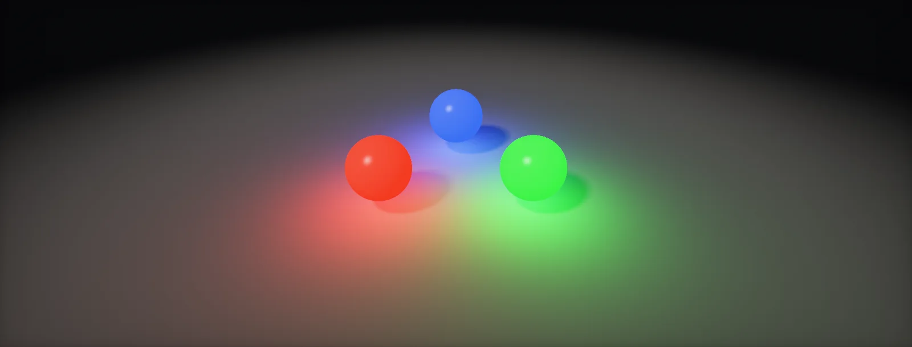

Colour Values
Colours in a shader are three numbers, but which three numbers depends on how they are encoded. This unit explains linear and sRGB values, values above 1 and brightness.

RGB values
Screens make every colour from three lights per pixel: red, green and blue. A colour in a shader is therefore three numbers, usually written from 0 (off) to 1 (full). Image files and colour pickers often show the same values as 0 to 255, because they store each number in 8 bits; divide by 255 to get the shader's value.
Because a colour is a vector, colour maths is vector maths, done part by part. Adding two colours adds light, like two lamps on one wall. Multiplying filters, like light passing through tinted glass or bouncing off a coloured surface.
Linear and sRGB
Our eyes notice small changes in dark tones far more than in bright ones. To spend the 256 steps of an 8-bit image where they are most visible, images and screens use an encoding called : the stored number is roughly the true light value raised to the power 1/2.2. A stored 0.5 does not mean "half the light"; it means about 21% of it.
Lighting maths must happen on the true, values: light adds up physically only there. Blending is the classic example. Mixing pure red and pure green 50/50 should give a yellow as bright as each of them; doing it on the encoded values gives a dark, muddy yellow:
Engines handle this for you when settings are right: colour textures are flagged sRGB so the GPU decodes them when sampled, the shader works in linear, and the final image is encoded once at the end (Exposure and Tonemapping: encoding for the display). Data textures such as roughness must not be decoded (Texture Memory: colour data and other data).
HDRP always works in linear. Colour textures need sRGB (Color Texture) ticked in the importer; data textures need it unticked.
Check Project Settings → Player → Color Space = Linear. Gamma mode exists for very old mobile devices and makes lighting and blending wrong in the way shown above.
Unreal works in linear. The texture's sRGB checkbox and the material sampler type (Color versus Linear Color or Masks) must agree.
HDR values
A screen can only show 0 to 1, but light in a scene has no upper limit: the sun is many thousand times brighter than a lamp-lit wall. Renderers therefore compute in : colour values far above 1, stored in 16-bit float render targets. At the end of the frame, exposure scales them and a tonemapping curve squeezes them into 0–1:
Exposure and the curves used for this, with real light units, are the whole subject of Exposure and Tonemapping.
Luminance
The eye is most sensitive to green and least to blue, so (0, 1, 0) looks much brighter than (0, 0, 1) at the same value. The of a linear colour weighs the three parts accordingly. Use it whenever you need one brightness number from a colour: desaturation, bloom thresholds, auto exposure.
The weights 0.2126, 0.7152 and 0.0722 are those of the Rec. 709 / sRGB primaries and only make sense on linear values. In HLSL: dot(c, float3(0.2126, 0.7152, 0.0722)), a dot product; Unity's Luminance() function does the same.
Build it in Unity HDRP
Colour handling is mostly settings, and the bugs come from mixing them up: a colour converted twice, or a data texture treated as colour. Written for Unity 6 with HDRP 17; Unity 2022 LTS works the same apart from a few renamed menu entries.
- Project Settings > Player > Other Settings > Color Space must be
Linear; HDRP requires it and warns otherwise. - For each texture, tick sRGB (Color Texture) for colour (albedo, emissive) and untick it for data (masks, roughness, normal maps, heights). See colour data and other data.
- In Shader Graph, a Color property has a Mode:
Default(0 to 1) orHDR(any brightness, with an intensity slider). Use HDR for emissive colours. - Create the graph: in the Project window, Create > Shader Graph > HDRP > Unlit Shader Graph. Open it and check the Graph Inspector > Graph Settings.
- Save
ColorDebug.hlsl. In the graph, add a Custom Function node. Set Type toFile, Source toColorDebug.hlsland Name toColorDebug(without the_floatsuffix). Add the inputs Color (Vector 3), Mode (Float) and the outputs Out (Vector 3), in that order and with those types: they must match the function's parameters. Mode 0 shows luminance, mode 1 shows a false-colour view where values above 1 turn yellow, then red. - Read
ColorFromScript.cs:material.SetColortakes an sRGB colour and Unity converts it to linear in a linear project;SetVectorpasses numbers unchanged. Mixing them up makes colours too dark or too light.
#ifndef ATLAS_COLOR_DEBUG_INCLUDED
#define ATLAS_COLOR_DEBUG_INCLUDED
float LuminanceRec709(float3 c) { return dot(c, float3(0.2126, 0.7152, 0.0722)); } // linear values only
void ColorDebug_float(float3 Color, float Mode, out float3 Out)
{
float y = LuminanceRec709(Color);
if (Mode < 0.5)
{
Out = y.xxx; // grey by luminance
}
else
{
// false colour: blue (dark) -> green -> white at 1 -> yellow -> red at 4 and above
float3 low = lerp(float3(0.05, 0.1, 0.6), float3(0.1, 0.8, 0.3), saturate(y));
float3 high = lerp(float3(1.0, 0.9, 0.1), float3(1.0, 0.1, 0.05), saturate((y - 1.0) / 3.0));
Out = y <= 1.0 ? lerp(low, float3(1, 1, 1), smoothstep(0.85, 1.0, y)) : high;
}
}
#endifusing UnityEngine;
// Two ways to send a colour, and why they differ in a Linear project.
public class ColorFromScript : MonoBehaviour
{
public Color tint = new Color(0.5f, 0.5f, 0.5f); // as picked in the Inspector: sRGB
void Start()
{
var m = GetComponent<Renderer>().material;
m.SetColor("_Tint", tint); // converted sRGB -> linear: the shader gets ~0.214 for 0.5
Color lin = tint.linear; // do the conversion yourself...
m.SetVector("_TintVector", lin); // ...because SetVector passes the numbers unchanged
// m.SetVector("_TintVector", tint) would be too bright: 0.5 used as linear is sRGB ~0.735
}
}HDRP has the same tools built in: the Rendering Debugger (Window > Analysis > Rendering Debugger) can show luminance, false colour and HDR values over the whole frame, which is the first thing to check when exposure looks wrong.
Same settings; URP also supports Gamma colour space for old mobile targets, where none of the linear maths in this unit holds. Prefer Linear.
Textures have an sRGB checkbox (and the Masks compression setting turns it off). Linear colour parameters in materials are linear; colours picked in the editor show both linear and sRGB hex values. The Buffer Visualization view modes show HDR scene colour.
Sources and further reading
The formulas and engine details in this unit come from these references. Engine documentation changes between versions.
- ArticleWhat every coder should know about gammaJohn NovakLinear against sRGB values with clear pictures of what goes wrong.
- DocsLinear or gamma workflowUnityHow Unity handles colour space and which textures are sRGB.
- ReferencesRGBWikipediaThe transfer function constants used in this unit.